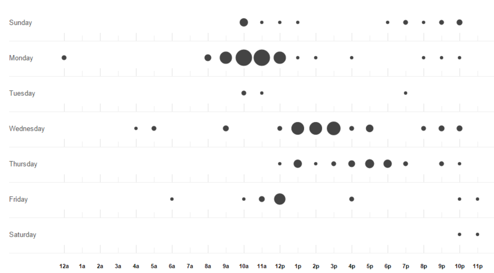
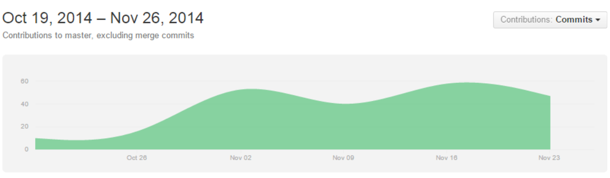

Sluttrapport for DAFE1200
Gruppe #1 - KITT
Dato: 30.11.2014
Prosjektdeltagere
- Hans Christian Nenseth s236334@stud.hioa.no
- Marius Alexander Skjolden s114143@stud.hioa.no
- Torbjørn M. Brandrud s236329@stud.hioa.no
- Hans Petter Osvold s929913@stud.hioa.no
Sammendrag
Følgende rapport er dokumentasjon for et gruppeprosjekt i kurset DAFE1200 ved Høgskolen i Oslo og Akershus, høsten 2014.
Dokumentet inneholder beskrivelse av planlegging og arbeidsmetode, samt en presentasjon av produktet.
Kapittel 1: Introduksjon
1.1 Prosjektet
Prosjektoppgaven var å utvikle et nettsted med de vanligste web-teknologiene. Det vil si HTML, CSS og JavaScript. Oppgaven har en del kravspesifikasjoner. En av de er at vi ikke kunne bruke rammeverk som for eksempel JQuery og Laravel. Nettstedet ble utviklet med fokus på universell utforming. Samtidig ble nettsiden utviklet slik at den er responderer godt på tvers av de fleste enheter og skjermstørrelser.
Prosjektets varighet var seks uker, hvor de to første ukene ble brukt til planlegging. De tre neste ukene ble brukt til utvikling av nettsiden. Den siste uken har vi produsert dokumentasjon og denne sluttrapporten.
Etter som oppgaven var relativt åpen - med tanke på tema - ble det brukt god tid på å velge tema. Det var viktig for oss å finne et tema som samtlige medlemmer av prosjektet kunne stå inne for. Etter en del diskutering fram og tilbake valgte vi tema og startet arbeidet med å produsere ulike planer for hvordan vi skulle realisere ideen vår.
Vi har gjennom hele prossessen hatt god kommunikasjon. Dette kombinert med gode planer og faste møter har ført til at vi har unngått store misforståelser og konflikter.
1.2 Referanser
| Tittel | Forfatter | Forlag | År |
|---|---|---|---|
| Applied Software Project Management | Andrew Stellman & Jennifer Greene | O'Reilly Media | 2005 |
| A History of the Internet and the Digital Future | Johnny Ryan | Reaktion Books | 2010 |
| HTML & CSS: The Complete Reference | Thomas A. Powell | Mc Graw Hill | 2010 |
| Responsive Web Design | 2010 | ||
| WWW tidslinje | 2014 | ||
{kind=link}
Kapittel 2: Organisering av prosjektet
2.1 Intern organisering
For å sikre produktiviteten under produksjonsfasen så produserte vi både en milepælsplan og en aktivitetsplan. Disse kan leses mer om i henholdsvis 2.3 og 2.4. For å holde oversikt over hvilke avgjørelser vi tok så skrev vi møtereferater fra samtlige møter. Dette kan leses mer om i 2.5. For å minske ulike risikoer knyttet opp mot prosjektet utførte vi en risikoanalyse og lagde en risikoplan og utførte de tiltakene som denne planen foreslo. Dette kan leses mer om i 2.6.
2.2 Prosjektansvarskart
| Ansvar | Navn |
|---|---|
| Prosjekt Leder | Hans Christian Nenseth |
| Ansvarlig for prosjektplanen | Hans Petter Osvold |
| Hovedansvarlig for Webside utvikling | Ble utviklet i fellesskap |
| Ansvarlig for back-up og dokumentasjon | Marius Alexander Skjolden |
| Ansvarlig for innhold | Torbjørn M. Brandrud |
| Ansvarlig for quiz | Marius Alexander Skjolden |
2.3 Milepælsplan
Etter forprosjektrapporten ble levert valgte vi å revidere den originale milepælsplanen. Grunnen til dette er Risikoplanlegging.
| Milepæl | Dato |
|---|---|
| HTML&CSS: Struktur + definisjoner for layout | onsdag 12. november |
| Quiz: Teknisk | onsdag 12. november |
| CSS: Farger + finpuss | onsdag 19. november |
| Innhold: Artikler + spørsmål | mandag 24. november |
2.4 Aktivitetsplan
Vi hadde faste møter hver mandag og onsdag. Mandager satt vi fra 08:00 til 14:00 og onsdager satt vi fra 13:00 til 15:30.
Dette klippekortet fra Github illustrer kjernetiden på en god måte.

2.5 Prosjektdagbok
Vi skrev møtereferater slik at vi enkelt kunne holde oversikt over hva vi ble enige om.
2.6 Risikoplan
Noe av det første vi gjorde i planleggingsfasen var å utføre en risikoanalyse og produsere en risikoplan. I neste kapittel finnes det to delkapitler som omhandler risikoplanlegging og -styring.
Kapittel 3: Styringsprosesser
3.1 Mål for prosjektet og valg av tema
Målet vårt for prosjektet var å utvikle en informativ nettside som skulle være universell utformet slik at de fleste skulle ha mulighet til å bruke den.
Vi har laget et nettsted som inneholder to sider. En forside som viser webbens historie gjennom en vertikal timeline. Samt en Quiz som lar brukeren få teste sine kunnskaper i kategorien teknologi.
Vi hadde flere ideer, blant annet nettsider dedikert til Kendo, studentmat og flagg. Det ble tidlig en konsensus for å utvikle et nettsted som tar for seg www sin historie. Hovedgrunnen til dette valget var at www er noe vi alle brenner for. Men vi ønsket også å utvikle noe med relevanse til faget. I læreplanen til DAFE1200 står det: studenten kan se denne delen av informasjonsteknologien både i et historisk og i et fremtidsrettet perspektiv. (Programplan HINGDATA)
Inspirasjon:
Hexademo
Tumblr-timeline
3.2 Tidsplanlegging
Hva skal gjøres/oppgaver? Hvor lang tid vil oppgavene ta. (Estimert)
| Milepæl | Deadline | Faktisk |
|---|---|---|
| HTML&CSS: Struktur og definisjoner for layout | 12. november | 10. november |
| Quizen: Teknisk | 12. november | 19. november |
| CSS: Fargevalg + finpuss | 19. november | 21. november |
| Innhold: Artikler + Spørsmål | 24. november | 17. november |
Merk: Ferdigstillelsen av Quizen ble forsinket med en uke. Grunnen til dette er at vi stokket om på den originale milepælsplanen slik at quizen ikke ville bli implementert innen hovedfunksjonaliteten til nettstedet var ferdig.
Illustrasjon av prosjektets arbeidsflyt.
3.3 Risikoplanlegging
Hva kan skje av uforutsette ting som kan stoppe/forsinke prosjektet eller føre til endringer i tidsplanen? Beskriv her (risikoplanlegging) alle ting dere kommer på. Under neste punkt (risikostyring) skal dere liste opp disse farene, og hvilke tiltak dere kan sette inn dersom dette skulle skje.
Vi utførte tidlig en risikoanalyse. Det kom fram at det var flere potentielle trusler mot prosjektet. Den største trusselen vi avdekket var at arbeidsmengde i andre fag skulle bli så stor at vi ikke hadde kapasitet til å bli ferdig med nettsiden. Andre trusler var både konflikt innad i prosjektgruppa, og at dårlig testet kode som ville funke dårlig i forskjellige nettlesere som for eksempel IE og Safari.
3.4 Risikostyring
På grunn av det som ble avdekket i analysen valgte vi å produserte vi en risikoplan, med mulige sikringstiltak. Disse sikringstiltakene foreslo at vi gjorde noen endringer i både aktivitetsplan og arbeidsmetode.
I den originale aktivitetsplanen stod det at vi skulle utvikle timelinen og quiz-side samtidig. Ettersom det er timelinen som var vårt kjerneprodukt, og at quizløsningen kun var et tilleggsprodukt, så valgte vi å revidere aktivitetsplanen. Dette åpnet for at vi kunne utvikle en fullverdig timeline-side først, for så å implementere quizløsningen. På denne måten senket vi risikoen for at kjerneproduktet ikke skulle rekke deadline.
Samtidig bestemte vi oss for å benytte oss av test styrt utvikling slik at potentiell nettleser inkompatibilitet ville bli oppdaget på et tidlig stadie.
3.5 Verktøy
Under planleggingsfasen ble Google Docs brukt til å samkjøre produsering av ulike dokumenter. Under produksjonsfasen har vi hovedsaklig brukt Git for å samkjøre produsering av kode, og til å holde oversikt over gjøremål og ressurser. Som kommunikasjonskanal har vi brukt Facebook gruppesamtale.
3.6 Uplanlagte implementasjoner
I løpet av gjennomføringen av prosjektet har ideer som opprinnelig ikke var til stede dukket opp. Vi har valgt å inkludere noen av dem i sluttproduktet. Det er i all hovedsak ideer rundt bruk av JavaScript på hovedsiden. Blandt annet: Lyttere for realtime filtrering av innholds kategorier og mulighet til å skjule individuelle tidslinje blokker. Quizen har og fått noen tillegg i JavaScript avdelingen. Dette innebærer en umiddelbar riktig/feil tilbakemelding etter hvert avgitt svar.
Kapittel 4: Presentasjon av ferdig nettsted
Hele nettsiden er responsiv, det vil si at den ser bra ut og fungerer optimalt på liten, middels og stor skjerm. For å oppnå dette brukte vi CSS media queries. Det har blitt skrevet om lag 50 små artikler om temaet. Artiklene blir presentert som en vertikal timeline og sortert etter årstall. Brukeren kan ved å trykke på ikoner filtrere timelinen, artiklene kan også "krysses ut" ved å trykke på x i det ytre hjørnet av artikkel-boksen. Brukeren kan ved å holde musen over artikkelen's dato få opp en tilsvarende epoch-timestamp.
Quizen er utviklet med JavaScript og den bruker JavaScript Object Notation som datastruktur. AJAX ble brukt til å laste inn data fra JSON til quizen. Quizen inneholder fem kategorier: kategori1, kategori2, kategori3, kategori4, kategori5. Hver kategori har to vanskelighetsgrader og tilsammen ca 20 spørsmål. Både spørsmålene og svaralternativene blir presentert i en tilfeldig rekkefølge. Brukeren får svar etter hvert svar, om svaret var riktig eller galt.
4.1 Informasjon og Innhold
Nettstedet skal gi informasjon om hendelser som er knyttet opp mot historien til WWW. Vi har tatt med noen hendelser som kom før WWW, men disse er bare for å sette det hele i et historisk perspektiv. Vi bestemte oss for å dele temaene opp i flere kategorier, slik at vi kunne ha dem på en tidslinje, og likevel ha en metode å sortere dem på. Disse kategoriene fokuserer på viktige oppfinnelser, gjennombrudd for WWW, viktige nettsider, nettlesere, og sist men ikke minst, mobilt nett.
4.2 Fargevalg, størrelser og tekst
En viktig kravspesifikasjon for prosjektet var universel utforming og aksessibilitet. Dette har preget valget av både farger, størrelser og font.
Når det gjelder fargevalg har vi holdt oss til å bruke fire farger som fungerer bra sammen. Ettersom nettstedet presenterer mye tekst er det viktig med en god kontrast mellom bakgrunn og tekst. Derfor har vi valgt å bruke hvit bakgrunn og svar tekst. Som er den beste fargekombinasjonen for å presentere tekst.
Når det gjelder tekst har vi valgt en tekst ... Har vi valgt å brukte ekte tekst istedet for grafisk tekst. Har vi valgt å bruke en primitiv font som fungerer på de fleste enheter. Vi har begrenset oss til å bruke kun en font. Font størrelse er angitt med em som er relativ og som skalerer med forskjellige skjermstørrelser.
4.3 Navigering og webside struktur
Nettside struktur
Nettstedet er delt opp i to sider. En forside som inneholder artikler og en quiz side som presenterer en quiz.
Forsiden er delt opp i fire biter:
- Et navigasjonsfelt helt i toppen av siden.
- En header rett under navigasjonsfeltet.
- En innholdsseksjon som presenterer artikler som en vertikal timeline.
- En bunntekst som inneholder kopirett og som linker til våre epostadresser.
Navigering: timeline
Vi har valgt å implementere et enkelt navigasjonsfelt i toppen av siden. Dette feltet er responsivt og fungerer bra på desktop, mobil og tablet. Ettersom vi er flere i prosjektgruppa med litt store fingre er vi godt kjent med potentiell-navigerings problematikk på mindre enheter. Derfor har vi sørget for at det ikke bare er selve teksten i linken som man kan trykke på. Navigasjonsfeltet har en fast posisjon slik at det vil følge med når brukeren blar nedover på siden.
Navigering: quiz
Når brukerer trykker seg inn til quiz-siden så møter han \ hun en vertikal meny med brede knapper som lar brukeren velge kategori. Etter brukeren har valgt kategori skal den velge vanskelighetsgrad. Her er det to valg: lett eller vanskelig. Når både kategori og vanskelighetsgrad er valgt starter quizen. Brukeren navigerer seg videre ved å trykke på "next" knappen. Etter brukeren er ferdig med en hel runde blir det vist en ny vertikal meny med to knapper som lar brukeren avgjøre om han \ hun ønsker å starte en ny quiz eller gå tilbake til hovedsiden.
Brukeren har også mulighet til å "krysse seg ut" av quizen ved å trykke på x-en oppe i høyre hjørnet av quizen. Dette x-et er tilstede under hele quizen. Hvis brukeren klikker på x får han \ hun opp en dialogboks som bekrefter om brukeren virkelig vil forlate quiz-siden. Ettersom vi ikke har implementert en databaseløsning så vil ikke siden lagre noe info om brukeren og dermed så vil all quiz framgang bli tapt om brukeren krysser seg ut.
4.4 Universell utforming
I dagens samfunn hvor flere og flere mennesker kobler seg til internett er det ikke lenger kun unge teknologi-intresserte brukere. Derfor har universell utforming helt fra planleggingsfasen vært en viktig kravspesifikasjon for prosjektet. Webben's brukere inkluderer nå fler og fler svaksynte, dysletikere og personer med diverse handicap.
Vi har sørget for at nettsiden er enkel og intuitiv i bruk. Samtidig har vi sørget for at sidens hovedfunksjon - det vil si å presentere webbens historie - skal fungere på alle enheter, selv uten javascript aktivert.
Vi har lagt opp til at all tekst skal kunne spilles av som lyd. Måten vi har gjort dette på er å unngå å bruke bilder som tekst. Samtidig har vi passet på å bruke alternativ tekst på de ikone vi har brukt.
Når det kommer til teksten så har vi passet på å ha en dysletiker/lese-vennlig font. Samtidig har vi passet på å ha en em basert font-størrelse som skalerer med skjermstørrelse, men som alikevell er større enn standard font-størrelse. Utover dette har vi sørget for å ha en passende linjehøyde slik at teksten får mere luft. Summen av disse tiltakene øker lesbarheten for svaksynte, dysletikere og folk flest!
Som nevnt tidligere har universell utforming vært en prioritet for oss under dette prosjektet, og vi er derfor veldig glad for at Tingtun's accessibility tester ga nettsiden 100.0%, ( resultat ).
4.5 Teknologier
Vi har brukt HTML til å definere strukturen til nettstedet.
CSS (Cascading Style Sheets) ble brukt til å definere farger og layout.
Det er flere fordeler ved å bruke CSS:
- Kodebasen blir mer oversiktlig.
- Det blir enklere å endre utseende på hele nettstedet.
- Det er enklere å unngå definisjonsrepetisjoner.
JavaScript ble brukt til å la brukeren samhandle med nettstedet. Fordelen av å bruke JavaScript er at det øker nettstedets interaktivitet på en måte som ikke ville vært mulig hvis man ikke brukte et JavaScript ( eller et annet scriptingsspråk ). Det kan utvikles funksjonalitet som lar brukeren manipulere nettstedets utseende. Et eksempel fra vårt nettsted er hvordan brukeren kan trykke på tidslinje ikoner for filtrere tidslinjen etter kategori.
Til quizen trengte vi en datastruktur for å lagre spørsmålene. Valget falt på JSON (JavaScript Object Notation). Grunnen til dette er at datastrukturer og programmering går hånd i hånd. Dårlige datastrukturer gir dårlig programmering. Med de teknologibegrensningene vi har fått er JavaScript og JSON et naturlig valg. Vi kunne ha valgt andre datastrukturer som f.eks et rent JavaScript objekt, men følte det ikke ga fleksibilitet og skalerbarhet til produktet. Tanken med JSON er enkelt å kunne flytte dataene over til andre plattformer eller tjenester. Selv om JSON har dype røtter i JavaScript miljøet har standarden blitt så populær at de aller fleste programmeringspråk har innebygget støtte for både lese og skrive til JSON format.
Vi har valgt å bruke JSON som datastruktur til quizen. Denne applikasjonen hadde behov for et godt og fleksibelt grunnlag for å kunne utvide med kategorier, vanskelighetsgrader, spørmål og svaralternativer. JSON gjorde det og enkelt å plukke ut spørsmålsett i nye tilfeldige rekkefølger hver gang en trekker et nytt spill.
Grunnet valget av JSON som datastruktur til quizen ble innlastingen av disse dataene litt mer utfordrende. Fordelen med dette var at vi fikk sett mer på AJAX og XMLHttpRequest. Denne teknologien vil og være en integral del ved eventuell ekspandering av siden og flytting av dataene (til quizen) over til en annen tjeneste.
Kort oppsummert har vi brukt disse teknologiene:
- HTML
- CSS
- JavaScript
- JSON
- AJAX
4.6 Testing
Under hele prosjektets gjennomførelse har alle i gruppa deltatt aktivt i feilsøking og testing. Utover manuell browser tester blant gruppas medlemmer og bekjente, er følgende online validerings tester gjennomført:
- W3C Markup Validation Service. Resultatet
- W3C CSS Validation Service. Resultatet
- Tingtun Accessibility Check, som anvender 158 tester for teste nettstedets tilgjengelighet. Resultatet
Kapittel 5: Evaluering
Hva har dere lært? Hva kunne vært gjort annerledes? Mangler det noe i rapporten? Hvordan var samarbeidet? Var det konflikter i gruppa, og hvordan taklet dere dette?
Forsøk å vise refleksjon over forskjellen mellom det dere satte dere fore i forprosjektrapporten, og det dere endte opp med.
5.1 Konklusjon
6 Vedlegg
TimelisteAktivitetsplan